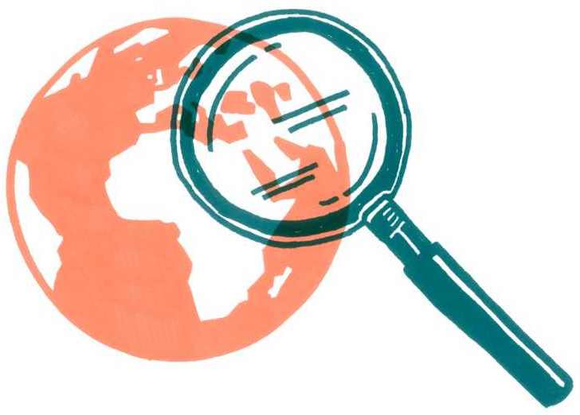

Klimatické hnutí a jeho strategie
V rámci výzkumu Klimavize odkazujeme na klimatické hnutí. Co a koho tím myslíme? Lidstvo čelí bezprecedentní výzvě v podobě rozvratu globálního klimatického systému.1 Politici toto téma dosud nevnímali jako prioritu a na politické úrovni neexistuje vůle k dostatečnému řešení klimatické krize. Proto je třeba vytvářet na politiky tlak a jako občanská společnost prosazovat účinná řešení.
Klimatické hnutí tedy vidíme jako neformální uskupení organizací z občanské sféry i jedinců, kteří se rozhodli zapojit do dialogu o řešení klimatické krize, nespravedlnosti a nerespektování planetárních mezí. Za jeho součást považujeme jak zaběhlé občanské organizace působící i na mezinárodní úrovni, tak expertní organizace věnující se klimatické krizi a udržitelné budoucnosti, hnutí organizující se zdola na dobrovolné bázi nebo lokální uskupení a iniciativy, které se věnují tématům klimatické krize na místní úrovni.
Do klimatického hnutí podle nás navíc nepatří jen lidé přímo v organizacích, ale také jednotlivci, kteří tyto organizace aktivně podporují a vnímají otázky udržitelné budoucnosti a řešení klimatické krize jako důležité – mohou to být například i političky, vědci, novinářky, odboroví organizátoři a další jedinci usilující o spravedlivé řešení klimatické krize.2
V této kapitole dáváme prostor právě klimatickému hnutí a jeho strategiím. První část textu popisuje roli klimatického hnutí v české společnosti, druhá část se věnuje jeho strategiím a ve třetí části shrnujeme přístupy, jak jednotliví aktéři klimatického hnutí své strategie tvoří.
Role klimatického hnutí
Klimatické hnutí – stejně jako jiná sociální hnutí – plní ve společnosti důležitý úkol. Upozorňuje na problémy, přináší do veřejné diskuze kritické postoje a mobilizuje společnost, aby na problémy reagovala. Sama společnost se tak zdola stává hybatelem politických a společenských změn a klimatické hnutí se stává svébytným politickým aktérem.
Souběžně s tím klimatické hnutí vytváří prostory pro společenské experimentování – testování různých taktik a strategií společenské změny a hledání možností alternativního fungování společnosti. Právě v různorodosti a otevřenosti novým přístupům spočívá síla klimatického hnutí. Proto je důležité nechávat tento prostor otevřený a nesnažit se nutně za každou cenu taktiky různých skupin v hnutí sjednocovat nebo bránit experimentování s novými přístupy.
V rámci focus group jsme se ptali na hodnocení klimatického hnutí samotných lidí, kteří se považují za jeho součást. Účastnice focus group vnímají vývoj hnutí v posledním desetiletí spíše pozitivně, a to v několika ohledech. Hnutí je početnější a mocnější, zvětšila se jeho rozmanitost i množství jeho cílů a strategií. V otázce těžby a spalování uhlí můžeme posun ilustrovat na tom, že klimatické hnutí se nezabývá už jen limity těžby uhlí (a snahou zabránit rozšiřování jeho těžby), nýbrž řeší, jakým způsobem nastane konec jeho těžby a co jej nahradí. Téma klimatu se rovněž daří vnášet i do politiky: každá z politických stran se dnes klimatu nějakým způsobem věnuje a musí k němu zaujmout pozici.
Na druhou stranu, změna se odehrává pomaleji, než je třeba. Z perspektivy narůstající klimatické krize jsou změny nedostatečné a klimatické hnutí není dosud dost silné. K tomu přispívá i pandemie koronaviru, která nárůst klimatického hnutí po raketovém nástupu během roku 2019 pomohla zabrzdit. Lidé se nemohou setkávat tváří v tvář a je mnohem těžší budovat zdola potřebné vztahy, organizovat se a pořádat akce. I v mediálním prostoru je ústředním tématem pandemie a klimatická krize tolik prostoru nedostává.
Dalším faktorem je i to, že se postupně vyčerpává impulz ze studentských stávek a další silný trigger event, jenž by pomohl zapojit více lidí a hnutí posílit, zatím nepřišel. Na útlumu hnutí se podílí i vyčerpanost menších místních uskupení, které nemají dost kapacit na své aktivity, a také opakující se cyklus vyhoření ve větších hnutích a organizacích.
Klimatické politiky se také stále více stávají předmětem tzv. kulturního konfliktu či kulturních válek. Díky sociálně-psychologickému výzkumu víme, že lidské postoje ke sporným tématům nejsou primárně ovlivněny informacemi o dané věci, ale kulturní identitou, která slouží jako pojivo mezi námi a členy naší sociální skupiny.3 Postoj ke klimatické změně pak kopíruje štěpící linii společnosti v „kulturních“ tématech, jako jsou genderová nerovnost nebo přijímání uprchlíků.
Do sporu o klimatické politiky se tak mnohem více než zvažování ekonomických nebo politických přínosů či nákladů promítají rozličné ideologie a představy o roli státu a dalších aktérů a důvěra v ně, ve výzkumný proces či různá pojetí svobody. Nejčastěji jsou dvě strany kulturního konfliktu popisovány jako kulturní liberalismus versus kulturní konzervatismus (jak je to dnes viditelné v USA, kde se postoje ke klimatu přesně shodují se členstvím v republikánské, či demokratické straně)4 nebo v českém kontextu větší města versus venkov, případně vítězové a poražení postkomunistické transformace.5
Diverzita ekosystému klimatického hnutí
Na jednu stranu je důležité, že klimatické hnutí působí navenek jednotně a nejsou vidět konflikty mezi různými organizacemi či proudy. Přestože existují ideologické rozepře, až na výjimky se neřeší veřejně, nýbrž veskrze kultivovanou debatou. Tato soudržnost hnutí posiluje a umožňuje mu být silnějším politickým aktérem.
Na druhou stranu je zřejmé, že v cílech, strategiích i taktikách panuje poměrně široce rozkročená rozmanitost. To ale nemusí být na škodu. Není potřeba snažit se celé hnutí za každou cenu sjednocovat a vytvářet zcela jednotné strategie – už proto, že různé části hnutí mluví k různým částem společnosti. Vnitřní rozepře na téma adekvátnosti jednotlivých strategií tak mohou být ztrátou času. V procesech sociální změny mnohdy neumíme vědecky dokázat (natožpak předpovědět), jaké strategie a taktiky fungují. Diverzitu strategií a experimentování s různými přístupy je tak na místě spíše podporovat a strategicky využívat.
V českém kontextu na úrovni environmentálních organizací není možné pozorovat vnitřní konflikty. Ony nepochybně jsou, ale nejsou jasně manifestované navenek. A to je extrémně důležité udržet. Klimatické hnutí existuje jako jednotná fronta a vnitřní ideologické rozpory, které tam jsou a jsou evidentní i z výzkumů, které jsme realizovali, dokáže hnutí odložit a neřešit je veřejně. To mi z politického pohledu přijde velmi důležité.
Ondřej Císař
Důležitá je pak spolupráce napříč hnutím a dělba práce a jednotlivých rolí. Je například potřebné, aby klimatické hnutí nebylo jen kritickým hlasem, ale dostatečně komunikovalo také pozitivní příklady, alternativy a návrhy řešení. To ale nemusí být součástí komunikace všech organizací. Dalším příkladem může být naopak užitečnost konfrontačních protestních taktik. V situaci, kdy radikálnější část hnutí přímou akcí upozorňuje na systémové problémy, přináší nová témata a normalizuje je v debatě, tak organizace, které jsou považovány za umírněnější a jejichž politickým nástrojem je spíše lobbing, jsou v tu chvíli spíše vnímány jako partner k diskuzi a mají snadnější pozici pro vyjednávání na úrovni prosazování legislativních změn.
To je třeba příklad hnutí, které bojovalo proti třetí ranveji na letišti Heathrow. Organizace tam byly dvě: jedna byla radikální (Plane Stupid) a jedna umírněnější. Začaly spolu nepřiznaně spolupracovat. Radikální organizace vylezla na parlament, dala tam transparent a spousta lidí z té mainstreamové organizace byla proti tomu. Ale nechali to být a neměli potřebu se k tomu vyjadřovat. Zároveň se shodli, že byli za Plane Stupid vlastně rádi, protože téma vytáhli nahoru a oni sami pak šli ke kulatému stolu a byli „ti hodní“. A myslím, že tohle by se mělo dít i v českém hnutí.
anonymní politoložka
V českém kontextu může být příkladem takové symbiózy propojení taktik různých organizací kolem jednání Uhelné komise, které kombinovaly vnější tlak (protesty, občanská neposlušnost a stínová uhelná komise) a vnitřní vyjednávání v pozici členů této komise. Taková dělba práce mezi „umírněnými“ a „důslednými“ přitom není nikdy zaručená – neznamená to, že každá radikální akce bude prospěšná. Akce, které sice upozorní na téma, ale současně od hnutí a jeho požadavků příliš velké množství lidí odradí, mohou být kontraproduktivní. Adekvátnost prostředků je tak třeba pečlivě vyhodnocovat a experimentálně ověřovat situaci od situace.6
Jaké role v ekosystému klimatického hnutí chybějí?
Zástupkyně a zástupci organizací cítí, že v ekosystému klimatického hnutí jejich organizace naplňují jedinečnou roli a jsou součástí větší skupiny. Z pohledu účastnic focus group však jsou ve stávajícím ekosystému klimatického hnutí různá bílá místa – tedy strategie, které nejsou využívány, nebo témata, jimž se nikdo nevěnuje.
Jako chybějící vnímají silnější koordinaci napříč hnutím (při vědomí výrazného rozšíření kapacit na tuto práci v posledních letech), která by umožnila nejen sdílení informací, ale i větší prostor pro sdílení zkušeností nebo pro přemýšlení o propojenosti strategií napříč klimatickým hnutím a jinými sociálními hnutími. Dále také zaměření na vzdělávání místních politiků v oblasti změn klimatu a jejich řešení nebo výraznější napojení na hnutí za práva zvířat. Chybí také masivní organizace s širokou organizační strukturou, která by byla schopná zapojit velké množství lidí z různých dosud nezapojených skupin a dokázala by se věnovat jak místním tématům, tak například oslovování politiků.
Menším regionálním skupinám často chybí silnější podpora ze strany organizací, které mají větší zdroje a kapacity, například v oblasti financí nebo expertizy. Účastnice focus group také pojmenovaly chybějící důraz na prosazování adaptačních politik (opatření, jejichž cílem je zmírnit dopady změn klimatu a posílit odolnost společnosti vůči změnám klimatu7), o kterých se na rozdíl od mitigačních politik mluví méně, přestože by mohly být důležitým tématem na lokální úrovni a mají potenciál zapojit dosud nezapojené aktéry (např. starší lidi). Také chybí silnější propojení se subjekty, které se zabývají sociálními tématy, či s odbory a propojení témat ochrany klimatu s tématy sociální spravedlnosti (důstojná práce, bydlení a další každodenní potřeby).
Nejít příliš rychle ani pomalu, nebýt příliš vpředu ani vzadu
Jaké strategie a taktiky má tedy klimatické hnutí k dispozici, jaké používá a jak o nich do budoucna uvažovat? Strategie a taktiky znamenají hledání vhodných řešení pro prosazování určitého záměru v dané konkrétní situaci. Jde tedy o problém slaďování prostředků (které můžeme ovlivnit) vzhledem našim cílům a vzhledem k podmínkám (které nemůžeme ovlivnit).8 V této podkapitole shrnujeme některá z doporučení, která vyvstala z rozhovorů s experty a expertkami.
V každém politickém uvažování je potřeba vyvažovat mezi dvěma polohami. První je snaha dívat se dostatečně daleko do budoucnosti a prosazovat důsledná řešení, která ukazují cestu z dnešní situace k něčemu lepšímu. Druhá poloha je snaha nejít příliš rychle a nevzdalovat se lidem kolem tak, že jim cíle a prostředky přestanou být srozumitelné.
V Česku jsou ve společnosti zakotveny názory, které v důsledku brání majetek velkých aktérů a korporací. Pobuřují nás situace, kdy aktivisté a aktivistky například obsazují důlní rypadla, protože máme pocit, že se narušuje soukromý majetek – jako kdyby šlo o srovnatelnou situaci s tím, že nám někdo obsadí auto. Skutečnost je ale jiná. Aktivisté se často zasazují o řešení, která jsou pro valnou většinu společnosti přínosná, a staví se proti aktérům, kteří v důsledku ovlivňují společenskou životní úroveň negativně. Je potřeba s tím pracovat a hledat cesty, jak nepoštvávat veřejnost proti klimatickému hnutí. Klimatické hnutí má ve společnosti podporovat věci, které považuje za důležité, ale zároveň lidem ukazovat, že je na jejich straně.
Zuzana Harmáčková
Na jednu stranu je potřeba mluvit o radikálních systémových řešeních a o rychlosti, se kterou musíme změny klimatu řešit, protože nemáme moc času. Na druhou stranu hloubkové změny ve společnosti trvají a nejdou prosazovat moc rychle, protože pak hrozí, že odpor proti změnám příliš zesílí a řešení zablokuje. Na jednu stranu je potřeba otevírat konfliktní témata, která lidem nebudou příjemná, budou vytvářet konfrontace i na úrovni mentálních modelů a toho, co je ve společnosti hluboce zakořeněné (např. témata zásluhovosti, etiky práce, nedotknutelnosti soukromého vlastnictví). Na druhou stranu je třeba příliš se nevzdálit od většinové společnosti, stát na straně „běžných lidí“ a brát do úvahy jejich potřeby, zkušenosti a požadavky, aby iniciátory změn vnímali jako spojence svých vlastních zájmů, nikoli jako ohrožení.
Je potřeba hrát politické judo a důsledně využívat přirozenou dynamiku procesů. Podívat se, kam to jde s dekarbonizací, protože uhlí u nás fyzicky dochází a nebude – důl Jiří skončí v roce 2032, ČSA asi 2024. Lidé budou propuštěni a v krajině zůstane díra. Nejpozději v ٣٠. letech bude uhlí na padesáti procentech, i kdyby se nic nestalo, žádná politika. Kolem pochyb o tom, co se stane s lidmi, byste to měli rozjet. Vystupovat tam, kde je krize, mluvit s nimi. Uvědomit si, že dekarbonizace je politická záležitost. Nesmíte se politiky bát.
Vladimír Špidla
To neznamená vyhýbat se konfrontacím, ale polarizovat strategicky: balancovat mezi extrémy. Rizikem je příliš umírněný přístup, který situaci přesahuje tak málo, že ji v důsledku pomáhá konzervovat. Ale rizikem jsou i požadavky tak radikální, že budou snadno odbyty jako nereálné. Specifickou otázkou tu je přenášení vzorů ze zahraničí do českého prostředí. Sledovat inovace a trendy ve světě je potřebné, ale jejich mechanické přesazování do jiného kontextu může být ke škodě. Je zásadní snažit se aktivně chápat specifika naší situace (například realitu postkomunistické společnosti) a strategii na ně adaptovat.
Samozřejmě v zemích, jako je například Německo, má klimatické hnutí větší ambice. Ale možná nejde o to, srovnávat se s německým klimatickým hnutím, ale porovnávat, jak je na změny připraven i zbytek naší společnosti.
Jiří Koželouh
Základním předpokladem úspěšného balancování je přitom mimo jiné snažit se o dlouhodobější pohled a plánování. Když nevíme, kam směřujeme, snadno se ztratíme v omezených možnostech a zdánlivých jistotách dnešní situace. Potřeba jsou ale i jasné první kroky a mezikroky. Je třeba vědět, odkud začít a jak má dnešní činnost vytvořit podmínky pro další postup směrem k vzdálenějšímu horizontu. Na reflexi dlouhodobější strategie je přitom potřeba vyhradit si čas, aby nám každodenní provoz nesebral veškerou pozornost.
Odpovědí může být i zde rozmanitost strategií jednotlivých aktérů klimatického hnutí. Legislativní změny vyjednávané lobbingem expertnější části hnutí mohou přinášet dílčí úspěchy na strukturální úrovni, zatímco část hnutí budující moc zdola se může snažit o hloubkové změny, které proměňují hodnoty lidí a za nimiž stojí dlouhodobé procesy.
Různé přístupy přitom mohou být více potřeba v různých situacích a fázích dlouhodobějších dynamik sociální změny. Často například vznikne – díky dlouhodobé osvětové práci – všeobecné povědomí o problému. Chybí ale politická vůle, která by překonala propast mezi vědomím problému a závazky ke skutečně efektivním opatřením. Je zapotřebí radikálnějších akcí, jež podtrhnou naléhavost situace a zmobilizují společnost do „krizového modu“. Ale naopak ve chvíli, kdy vyvstane otázka sociálních dopadů opatření a jejich společenské přijatelnosti, může být potřeba zase udělat „krok zpátky“ a věnovat čas trpělivému politickému vyjednávání kompromisů, které budou pro lidi přijatelné.
Vždycky je potřebné, aby se ten zásadní konflikt odehrál ještě v době, kdy vám dílčí neúspěch nemůže ovlivnit celý výsledek. Lidé jej musí prožít roky předem, a když se rozhoduje, nejistoty jsou už překonané a jde se dál. Musí se pracovat s časem.
Vladimír Špidla
Je třeba vycházet přitom z toho, že různé přístupy jsou nevyhnutelné: někdo má tendenci preferovat dlouhodobou důslednost, někdo krátkodobou účinnost. Různé součásti hnutí navíc nemusejí vycházet ze stejné analýzy situace a i podklady pro jejich strategie se mohou různit. Expertiza, která je relevantní pro umírněnou část hnutí, nemusí být relevantní pro strategie radikální části, protože také jejich strategické cíle se liší. Pluralita je přirozená a různé přístupy se budou vzájemně ovlivňovat, i když mezi sebou nebudou nijak sladěné. Proto je vhodné chápat různé strategie spíše jako role v týmové hře než jako navzájem se vylučující koncepce, které soutěží o to, která je ta „správná“.
Jak se v klimatickém hnutí tvoří strategie
Následující text se věnuje tomu, jak si jednotlivé organizace a skupiny lidí z klimatického hnutí tvoří strategie, jakým úskalím přitom čelí a co by jim plánování strategií ulehčilo. Vhled do této problematiky nám umožnily diskuze se zástupci a zástupkyněmi organizací klimatického hnutí při online focus group.
Větší či zaběhlejší organizace mají často pojmenované, čeho chtějí dosáhnout a jak. Jejich strategie se liší podle délky plánování (čtyři roky Hnutí DUHA, tři roky Greenpeace, jeden rok Centrum pro dopravu a energetiku, Fridays for Future) a mimo jiné vycházejí z dlouhodobějších záměrů či vizí. U některých uskupení na ni mají vliv i aktuální granty.
V menších uskupeních aktuálně strategie vznikají nebo by jejich vznik členové a členky alespoň uvítali. Vnímají, že by jim strategie mohla pomoci lépe prioritizovat aktivity a také se zaměřit v jejich úsilí na konkrétní oblasti. V menších organizacích tomu ale často překáží problém s kapacitami lidí, které komplikují jejich možnosti systematicky se strategii věnovat, popřípadě se tato iniciativa opírá o pár jednotlivců, kteří uskupení „táhnou“.
Menší uskupení bez strategií pak realizují aktivity, které jim a) přijdou zajímavé, b) reagují na aktuální situaci. Aktivity přicházejí spíše náhodně a jsou odkázány na „zápal“ lidí pro danou myšlenku.
Častým problémem přitom je, že témat, která je potřeba řešit, je velké množství. V určitých situacích je navíc nutné reagovat na situaci bezprostředně (tj. nelze vše naplánovat) a je zapotřebí pružnosti. Podstatná tak může být spíše jasná vize, záměr a snaha plánovat průběžně než mít „velký plán“, který by vše obsáhnul na dlouhou dobu dopředu.
Jak strategie vzniká a o co se opírá
V zaběhlejších občanských organizacích i v neformálních hnutích vzniká strategie společnou prací, často nehierarchicky a decentralizovaně. Do plánování je tak zapojena široká část organizace (ev. všichni). Případně vznikají strategické skupiny, které se strategii věnují systematicky, a širší část organizace poté strategii komentuje, připomínkuje a eventuálně také schvaluje. Na základě strategie vznikají plány na kratší období. Celý proces je náročný na čas a kapacity – může zabrat několik měsíců i rok a ve větších organizacích je na něj vynaložena významná část lidských i finančních kapacit (např. na facilitaci a nastavení procesu).
U větších/zaběhlejších organizací hrají v plánování roli následující parametry a vstupy:
- Vize organizace, která předchází celé strategii a podle níž si určuje organizace své cíle. „Vize“ představuje hodnotový kompas: určuje, k jakému světu chce organizace přispívat. Tato vize vychází ve specifickém případě u globálních organizací z vizí, které jsou artikulované na mezinárodní úrovni.
- Měřitelný dopad, například jak strategie přispěje k měřitelným cílům (např. snižování emisí) nebo jak se do aktivit organizace zapojí veřejnost.
- Zdali se tématu někdo věnuje. Organizace sledují činnost ostatních organizací a hnutí, aby se jejich aktivity doplňovaly a nepřekrývaly. Také sledují možnosti vzájemné spolupráce.
- Síla/možnost ovlivnit společnost. Jaký má organizace potenciál vyvolávat společenské změny a posouvat se k cílům?
- Politická připravenost/příležitost. Jak strategie rezonuje s politickou situací? Jsou nějaké politické příležitosti, které lze využít?
- Zkušenost a ponaučení z chyb a expertiza. Důležitou součástí plánování je uplatňování reflexe předchozích zkušeností a expertizy, často se k plánování využívají vstupy externích expertů a expertek a analyzují se trendy a příležitosti (politické, kulturní, financování).
- Názor/nálada příznivců. Jak ve strategii reagovat na to, co si myslí členové a příznivci organizace?
V menších a mladších uskupeních je prioritizace důležitosti založena více na osobní zkušenosti a akutnosti přicházejících událostí. Roz-hodování je závislé více na preferencích členské základny. Důležité je i to, co se odehrává ve zbytku hnutí a jak může organizace aktivity celého hnutí doplnit.
V lokálních iniciativách je velkým faktorem aktuální dění v obci a okolní lokalitě a také je důležité, jaká témata se otevírají na úrovni komunální politiky a kde je možnost zasáhnout.

Co pomáhá organizacím při tvorbě strategie/plánu?
- externí facilitace, možnost jejich financování od větších organizací
- emoční podpora mezi organizacemi
- dobře nastavené rozhodovací procesy a procesy strategického plánování
- dobré vztahy v organizaci nebo v hnutí; je důležité, aby strategie dávala lidem smysl a chuť zapojit se a být aktivní
- prostor pro setkávání, což je samozřejmostí pro zaběhlé organizace, ale ne pro hnutí zdola a místní iniciativy
- menším uskupením může pomoci expertiza od organizací s většími kapacitami, například v podobě materiálů a zpracovaných podkladů pro rozhodování
- dobrá dělba a delegování práce a rozdělení odpovědnosti
Problémy při tvorbě strategií
- nedostatek prostoru
- nedostatek kapacit
- obava delegovat nebo si brát odpovědnost
- pro utváření strategií je důležitý mezinárodní kontext a dobrá analýza, menší organizace k ní nemají přístup a potřebují ji zpracovat a zprostředkovat (od těch větších)
Problémem je obecně nedostatek kapacit. Menší organizace čelí nedostatku lidí, kteří by se dlouhodobě zapojovali, přestože existuje i možnost placených pracovních pozic. Netýká se to ale jen menších organizací. Můžeme říct, že obecně je v klimatickém hnutí problém s nedostatkem zkušených lidí nebo lidí se specifickými znalostmi. Je zapotřebí věnovat větší pozornost dlouhodobému rozvoji kapacit, a zejména místních lídrů a lídryň schopných převzít odpovědnost tam, kde dnes věci „visí“ na těch nejaktivnějších. V menších organizacích je proto také důležité, aby práce na administrativních záležitostech – a reprodukci skupiny – nespadla na člověka, který činnost inicioval, protože to může omezit schopnost skupiny být iniciativní. Je dobré hledat cesty, jak by administrativní zátěž mohly nést větší organizace a podporovat menší uskupení v jejich fungování a získávání zdrojů (jak analytických, tak finančních).
Tipy pro klimatické hnutí
Komunikace
- Obecně pomáhá mapovat a komunikovat příklady dobré praxe, které umožňují vytvářet pozitivní představy o energetické či jiné transformaci.
- Je na místě nevyčerpávat se vedením „kulturních válek“. Hnutí by se mělo naopak snažit utvářet pocit, že téma změny klimatu nepatří k žádné konkrétní formě kulturní nebo třídní příslušnosti, ale je naopak tématem, které se musí propsat do všech sfér a na jehož řešení musí být celospolečenský zájem.
- Je otázkou, zda je žádoucí, aby téma změn klimatu reprezentovali určití ambasadoři či influencerky. Mohou totiž vyvolávat pocit, že ochrana klimatu je pouze agenda uzavřených a vymezených skupin, které se s těmito osobnostmi identifikují.
- Není vhodné téma klimatické krize přehnaně personalizovat a spojovat s konkrétními osobami, proti kterým klimatické hnutí bojuje. Tím se vytvářejí falešné terče, na něž nemá cenu plýtvat energii ve chvíli, kdy potřebujeme odstraňovat systémové příčiny. Na konkrétní firmy a osoby je vhodné cílit výhradně jako na „překážky změny“, ne jako na „nepřátele“ (tzv. přístup „tvrdě vůči problému, měkce vůči člověku“).
- Je také otázkou, jak chytře komunikovat spojitost mezi změnami klimatu a jejich konkrétními dopady. Odbornice a odborníci se shodují, že komunikace konkrétních příkladů dopadů klimatické krize pomáhá lidem riziko pochopit. Může však být rizikové postavit celou komunikaci jen na jednom dopadu (například suchu), protože lidé pak mají tendenci ztrácet pozornost, když dočasný jev přejde.
- Nemá smysl snažit se přesvědčovat aktivní odpůrce spravedlivé transformace či odmítače existence změn klimatu. Ti jsou nepřesvědčitelní a nemá s nimi smysl ztrácet čas. Je třeba zaměřit se na širokou většinu pasivních příznivců a nerozhodných lidí.
Příležitosti
- Nastávající konec uhlí přijde rychleji, než si ještě před pár lety leckdo mohl představit. Pro českou společnost je výzvou, ale také příležitostí, která přináší prostor pro vytvoření vize společnosti bez fosilních paliv. Důležité je, aby vize nevznikala v úzké skupině lidí, ale aby o ní proběhla široká celospolečenská diskuze.
- Boj proti těžbě a spalování uhlí ještě není u konce a hrozí, že se bude oddalovat kvůli nárůstu cen energií, kdy se těžba hnědého uhlí vyplácí. Dalším rizikem je i potenciální státní podpora uhelného průmyslu (např. formou tzv. kapacitních mechanismů, které drží záložní uhelné či plynové zdroje, nebo dotacemi pro uhelné teplárny). Je důležité na konec uhlí stále dohlížet, ale neměl by být hlavním tématem, které bude klimatické hnutí řešit. Uzavření dosavadního cyklu klimatického hnutí (kdy se podařilo dosáhnout všeobecného vědomí krize a sehrát první kolo „boje o uhlí“) lze strategicky využít jako příležitost otevřít „fronty“, na něž dosud nebyla kapacita.
- Jako strategické se jeví využívat rozmanité formy tlaku na největší emitenty (od právních sporů až po přímé akce) a zaměřit se na různé pilíře, na nichž tyto společnosti stojí. Tím je třeba finanční sektor, který poskytuje těmto společnostem peníze nezbytné pro jejich fungování, nebo jsou to jejich reklamní a propagační aktivity apod.
- Kvůli pandemii, ale také vyčerpání impulzu ze studentských stávek je potřeba, aby hnutí do budoucna vytvářelo nebo úspěšně využívalo další trigger eventy. Mezi takovými momenty je třeba trpělivě pracovat na předávání zkušeností nově zapojeným lidem a na rozvoji schopností i navazování partnerství.
Hrozby
Vnější hrozby
- Součástí průběhu procesů sociální změny je moment, kdy si různé typy aktérů, mezi nimi i dosavadní odpůrci klimatického hnutí, začnou témata přivlastňovat, vyprazdňovat je a navrhovat různá greenwashingová řešení (např. fosilní plyn, vodík). To vytváří pocit, že se situace řeší a máme ji pod kontrolou, avšak ve skutečnosti nedochází k systémové změně a emise se nesnižují dostatečně rychle. Příkladem může být kampaň Hospodářské komory Na klima s rozumem, která se snaží navodit dojem, že Hospodářská komora se stará o ochranu klimatu (tím, že podporuje jádro a fosilní plyn jako „zelená“ řešení).9
- Hrozbou jsou četně zmiňované „kulturní války“. Klimatické hnutí v nich může sloužit jako slaměný panák, který je viníkem rozmanitých problémů od zpomalení ekonomického růstu přes krizi českého průmyslu až po zvyšování cen energií (jak se to už děje v rámci stávající vládní rétoriky).
- Hrozbou pocházející z vnějšku klimatického hnutí může být i cílené ničení aktérů a aktérek v klimatickém hnutí pomocí kyberšikany a šíření dezinformací. To jsme mohli vidět na příkladu hoaxů o tom, že Fridays for Future schvalují smrt svých prarodičů,10 u šikany odpůrců dolu Turów ze strany polských médií11 nebo u aktivit profilů na sociálních sítích jako Greenpiss nebo Hnutí DUCHA, za nimiž stojí PR společnosti uhlobarona Pavla Tykače.12 Klíčovou obranou je solidarita – společné vystoupení proti těmto praktikám, praktická podpora jejich obětem i další budování síly klimatického hnutí, aby nebylo malou skupinou, kterou lze nátlakem snadno rozdělit či zastrašit.
Vnitřní hrozby
- Problémem plynoucím ze snahy o sjednocení taktik a strategií může být přehnaný tlak na jednotu a vynucování konsenzu na „nejlepším“ řešení. To přitom může vést naopak k oslabení a zvýšené uzavřenosti hnutí. Oslabilo by to jeho sílu, která spočívá mimo jiné v široké škále různorodých přístupů.
- Další hrozbou pro vnitřní fungování klimatického hnutí a nárůst jeho podpory je fungování během pandemie covidu. Klimatické hnutí poslední roky nabíralo na síle a ve chvíli, kdy se nemůže potkávat a nabírat nové členstvo, vzniká riziko, že bude ztrácet energii a nedokáže navázat na svůj rozkvět před pandemií.
- Část hnutí bude aktuální útlum považovat za znak toho, že klimatické hnutí prohrává nebo není úspěšné. To by byla chyba. Historicky je typické, že po velkém impulzu, jakým byly například masové studentské stávky, nastává určitý útlum aktivity. Ten je jednak částečně zdánlivý (fotogenické protesty nahrazují trpělivější a méně viditelné aktivity), a jednak přirozenou součástí cyklu, jak sociální hnutí fungují.13
- Hrozí i ztráta podpory a nedostatečné zapojení lidí z menších měst, místních skupin a jednotlivců, kteří si ve svých snahách o řešení změn klimatu mohou připadat osaměle a jimž hrozí ztráta energie a vyhoření. Klimatické hnutí musí aktivněji podporovat svoji širší společenskou základnu mimo „jádra podpory“ ve velkých městech. V menších skupinách je obecně klíčové podporovat mechanismy předávání kompetencí a zkušeností v rámci přirozených cyklů fluktuace lidí.
O čem byla tato kapitola
- Klimatické hnutí předkládá důležitá témata, tlačí na řešení problémů a samo je politickým aktérem a hybatelem. Je rozmanité, jsou v něm organizace, kolektivy i jednotlivci, jejichž práce se liší v taktikách a strategiích, které není třeba za každou cenu sjednocovat, ale je důležité, aby se strategicky doplňovaly – toho se dá dosáhnout třeba dalším posilováním sdílení napříč hnutím.
- Jako každý politický subjekt musí klimatické hnutí hledat rovnováhu v tom, aby změny prosazovalo dostatečně rychle, jak vyžaduje situace, ale ne příliš rychle, aby nedošlo k odmítnutí změn. Stejně tak musí navrhovat dostatečně hloubková a systémová řešení, a přitom se příliš nevzdálit od lidí a jejich každodenních potřeb a problémů. Proto je důležité, aby různé součásti hnutí pracovaly na různých úrovních a využívaly různé nástroje, jak prosazovat změny.
Průvodce změnou klimatu. Dostupné z: www.klimatickazmena.cz. ↩︎
Viz Klimatické hnutí. Dostupné z: klimatickakoalice.cz. ↩︎
HOFFMAN, Andrew J. Jak kultura utváří diskusi o klimatické změně. Brno: Masarykova univerzita, 2017. ISBN 978-80-210-8711-8. ↩︎
HOFFMAN. ↩︎
BUCHTÍK, Martin, Patrik EICHLER, Ondřej KOPEČNÝ, Kateřina SMEJKALOVÁ a Jitka UHROVÁ. Jedna společnost → různé světy: poznatky kvalitativní studie o fragmentarizaci české společnosti [online]. Dostupné z: library.fes.de.pdf. ↩︎
NUNES, Rodrigo. Neither Vertical nor Horizontal: A Theory of Political Organization. ↩︎
Adaptační strategie České republiky. Dostupné z: faktaoklimatu.cz. ↩︎
To odpovídá koncepci takzvané „intencionální adaptace“ teoretičky strategií sociálních hnutí Adrienne Maree Brown: BROWN, Adrienne Maree. Emergent Strategy: Shaping Change, Changing Worlds. ↩︎
Na klima s rozumem. Dostupné z: komoraplus.cz. ↩︎
VLASATÁ, Zuzana. Internetem se šíří lež, že se studentští ochránci klimatu těší na smrt prarodičů. Dostupné z: denikreferendum.cz. ↩︎
KYSELICOVÁ, Alžběta. Šrouby odmontované z auta, zvířata vypuštěná z ohrad. Důl Turów ve fázi potyček mezi Čechy a Poláky. Dostupné z: denikn.cz. ↩︎
TRUCHLÁ, Helena. Stránku urážející ekology spravuje tvůrce facebookové image Tykačovy elektrárny. Aktuálně.cz [online]. Economia, 13. 1. 2020 [cit. 2021-12-28]. Dostupné z: zpravy.aktualne.cz. ↩︎
The Movement Action Plan: A tool for analyzing the progress of your movement. Dostupné z: by2020weriseup.net.pdf. ↩︎